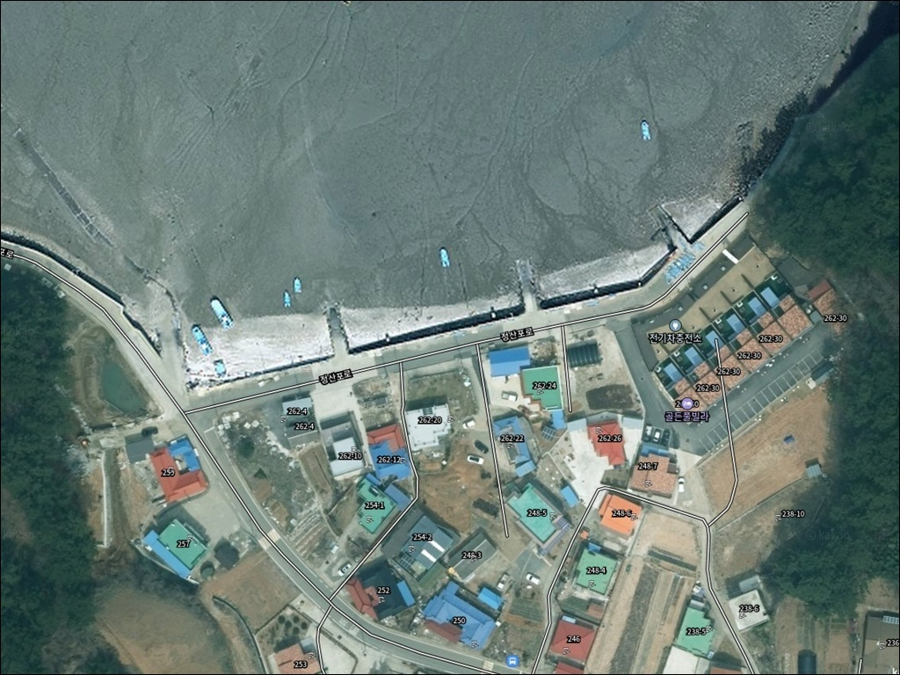
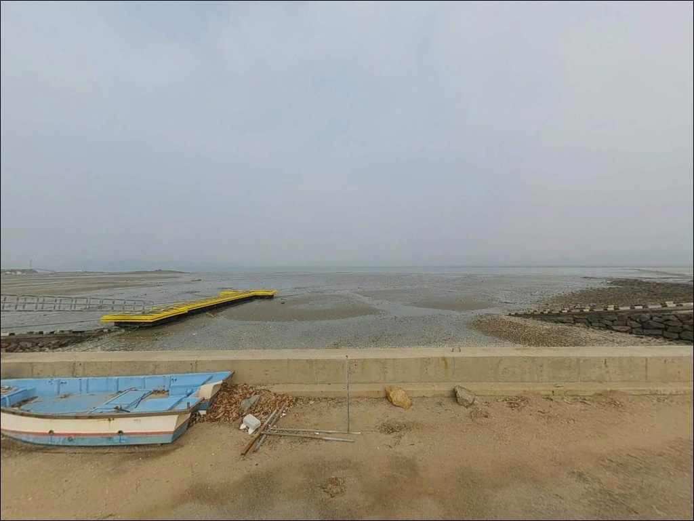
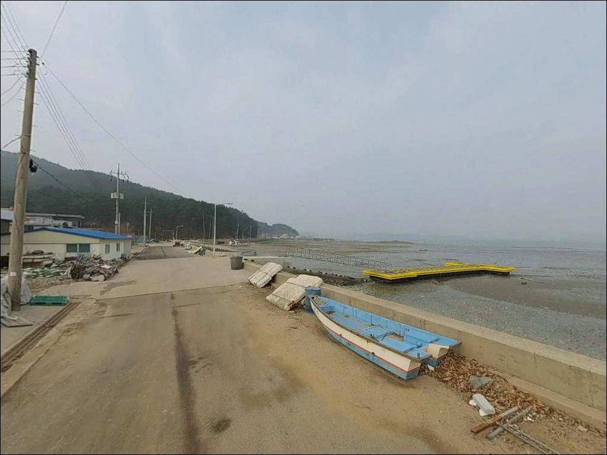
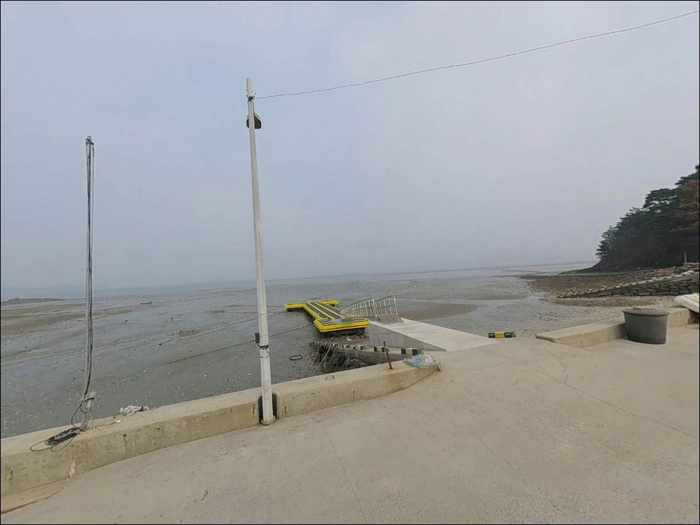
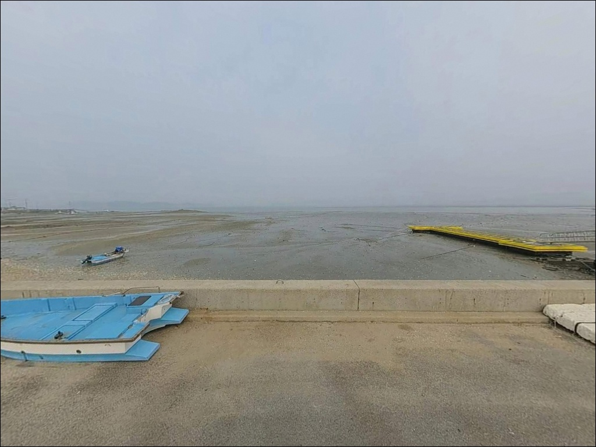
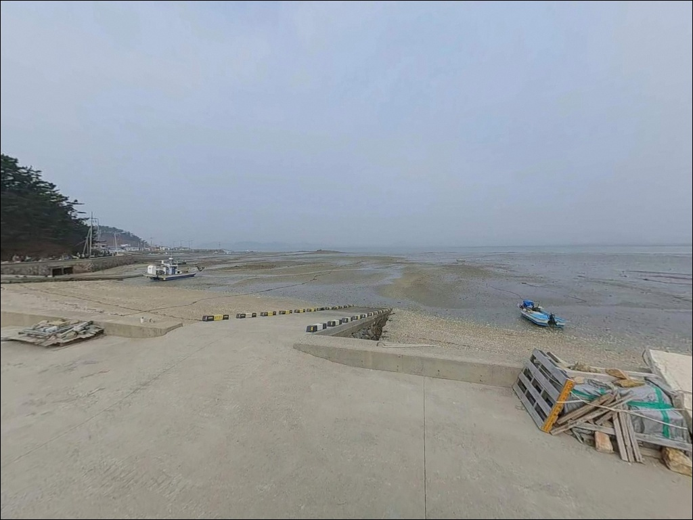
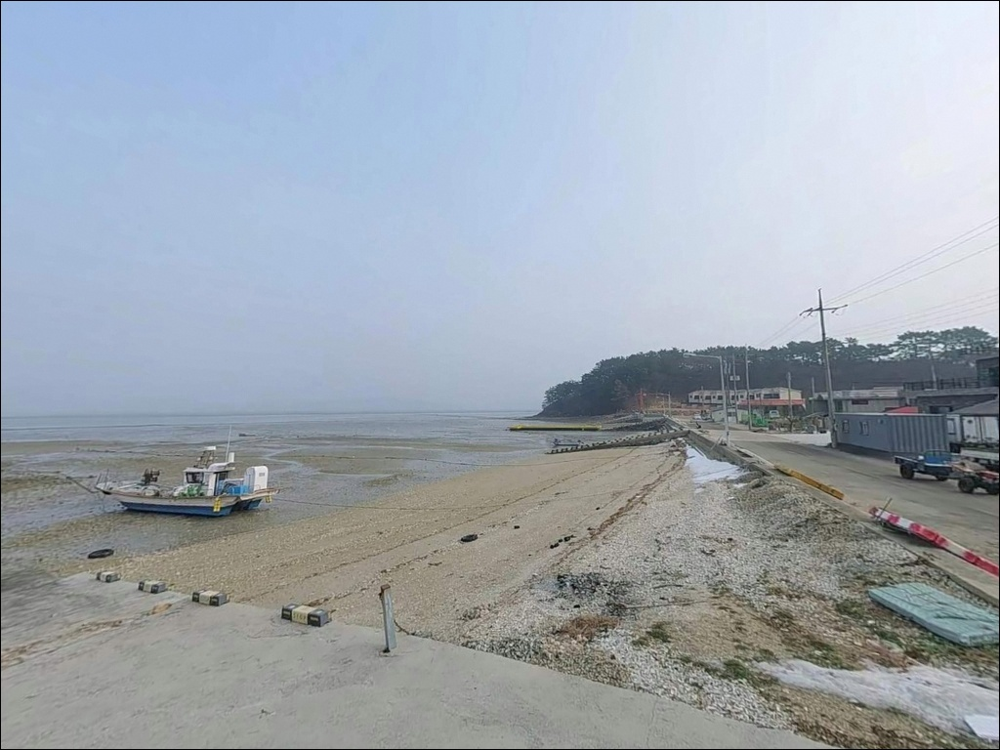
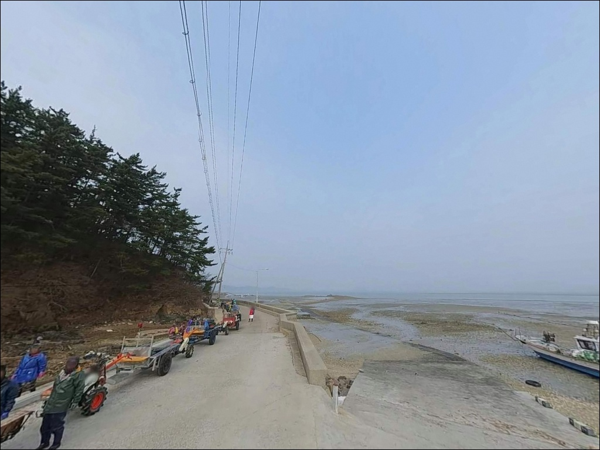
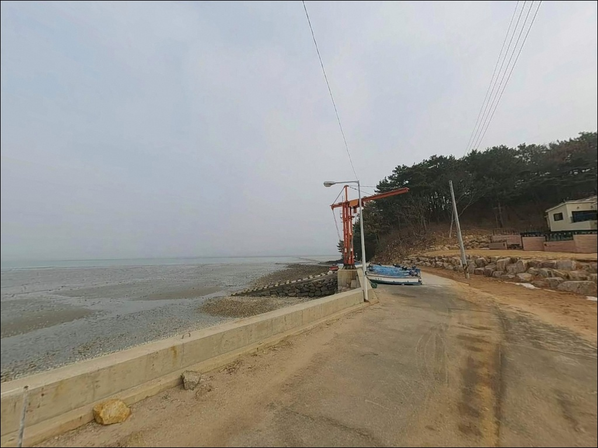

정산포, 충남 태안군 여유로운 차박, 낚시 포인트
이 페이지에는 광고(제휴 링크 포함)가 있으며, 광고 링크를 통해 구매하면 운영자가 판매 수익 또는 수수료를 받을 수 있습니다. 포인트 사진: 카카오맵 스카이뷰·로드뷰. 이 페이지의 지도·사진 이미지는 카카오맵의 실제 서비스 이미지와 다를 수 있습니다.


포인트 안내
정산포
충남 태안군 근흥면 정죽리 330
정산포를 찾는 낚시인들이 가장 많이 범하는 실수는
물때를 확인하지 않고 출발하는 것입니다.
서해 갯벌 특성상 간조 시에는 수심이 너무 얕아
원투 채비조차 제대로 운용하기 어려운 상황이 만들어지고,
만조 전후 타이밍을 먼저 잡아야
이 포인트가 제 역할을 합니다.
태안군 근흥면 정죽리에 자리한 정산포는
2004년 어촌정주어항으로 지정된 소형 항구입니다.
안흥량(安興梁) 해역에 가까운 위치라
물때에 따라 조류 변화가 있을 수 있는 해역이며,
원투낚시와 내항 생활낚시를 중심으로
접근하는 성격의 포인트입니다.
이 글은 정산포의 진입 환경, 낚시 지형 조건,
어울리는 낚시 방식에 집중합니다.
조황 단정이나 특정 어종 보장은
이 글의 범위에 포함되지 않습니다.

1. 진입 동선과 포인트 접근성
정산포 진입은 '정산포로' 도로명을 따라
어촌 마을 쪽으로 들어오는 구조입니다.
마을 진입형 도로 특성상 폭이 좁아지는 구간이
포함될 가능성이 있으며,
대형 SUV나 캠핑 장비를 갖춘 차량이라면
출발 전 위성지도로 진입로를 한 번 확인하고 가는 편이
안전합니다.
어촌정주어항 구조상 물양장과 인접한 공터,
또는 호안을 따라 형성된 도로변에
주차가 가능한 공간이 있는 편입니다.
다만 어선 접안과 조업 동선이 우선이므로
어선 이동을 방해하지 않는 자리를
찾는 것이 기본입니다.
회차 공간은 넉넉하지 않을 가능성이 있습니다.
여러 대가 동시에 진입하면 공간이 좁아질 수 있어
주말이나 시즌 피크 시기에는
일찍 자리를 잡는 편이 유리합니다.
초행이라면 평일 한적한 시간에 먼저 현장을
확인해 보는 것이 도움이 됩니다.

2. 차박 환경과 야간 체류 여건
정산포는 민가와 가까운 어촌 마을 구조입니다.
야간에 차량 통행은 적은 편이지만
주택가와 인접해 있어
소음과 차량 공회전은 각별히 주의해야 합니다.
프라이버시가 완전히 확보되기 어려운 환경에 가까우며,
낚시 후 조용히 머무는 방식이 현실적입니다.
야간 조명 여건은 현장에서 직접 확인이 필요합니다.
어촌 소형항 특성상 가로등이 충분하지 않을 수 있어
개인 헤드랜턴과 보조 조명 장비는 반드시 챙겨야 합니다.
서해 해안 특성상 바람이 강해지는 경우도 있으므로
야간 기상 확인은 필수 단계입니다.
태안 해안 일대는 태안해안국립공원 구역과
겹칠 가능성이 있습니다.
국립공원 구역 내에서는 지정 외 장소에서의
야영과 취사가 원칙적으로 제한되므로
출발 전 국립공원공단 또는 태안군에 먼저 확인하는 것이
안전한 첫 단계입니다.


3. 주변 편의시설 및 인프라 현황
정산포에서 차량으로 약 10분 거리에
GS25 안흥항점이 있습니다.
간단한 식음료와 소품 보충에
가장 접근이 빠른 옵션입니다.
같은 방향에 안흥항구낚시프라자도 위치하고 있어
낚시 소품 보충은 안흥 방면 동선이 효율적입니다.
포인트 인근에 정산포 바닷가 식당이 있습니다.
충청남도 태안군 근흥면 정산포로 228-9에 위치하며
화요일부터 일요일까지 11시 30분~21시 운영하고
월요일은 휴무입니다.
갈낙찜과 박속낙지탕으로 알려진 현지 식당으로
출조 전이나 마무리 식사로 활용할 수 있습니다.
마트, 약국, 면사무소 등 기본 생활 인프라는
차로 10~15분 거리의 근흥면 소재지에서
이용이 가능합니다.
이동이 필요하므로 주요 소품과 식수는
출발 전에 미리 준비해 오는 편이 안전합니다.

4. 진입 전 반드시 챙겨야 할 준비사항
정산포 방문 전 가장 먼저 해야 할 일은
물때 확인입니다.
바다타임에서 태안 근흥 기준 물때를 확인하고,
만조 전후 2시간 구간을 노려 출발 시각을 맞추는 것이
이 포인트를 제대로 쓰는 방식입니다.
간조 시간대에 맞춰 들어가면
수심이 너무 얕아 원투 채비조차 운용이 어렵습니다.
안흥량은 고려시대부터 '난행량'으로 불렸던
조류가 강한 해역입니다.
인접한 정산포에서도 사리 전후에는
조류 영향이 강해질 수 있으므로
조금 전후 타이밍이 채비 컨트롤에 유리합니다.
서해 기상은 변화가 빠른 편이라
출발 당일 아침 기상청 예보를 다시 확인하는 것이
헛걸음을 막는 기본 단계입니다.
갯벌과 펄이 섞인 바닥 구조상
원투낚시에서 채비 손실이 생길 수 있습니다.
여분 봉돌과 바늘은 넉넉하게 준비하고,
야간 낚시에는 구명조끼와 헤드랜턴을
반드시 착용하는 것이 기본 안전 조건입니다.

5. 지형 기반 낚시 여건 분석
정산포는 서해 내만권의 소형 어촌정주어항입니다.
물양장과 호안 구조를 갖춘 선착장 형태로,
외해에 직접 노출되기보다는
만 안쪽으로 부분 차폐된 구조에 가깝습니다.
파도 영향은 비교적 완만하고,
잔잔한 수면 환경이 형성되는 편입니다.
바닥은 펄과 모래가 섞인 갯벌 특성이 강합니다.
간조 때 갯벌이 드러나고 만조 때 수심이 채워지는
서해 특유의 조간대 패턴을 따르는 포인트입니다.
물양장 끝단과 외측 호안 방향으로 갈수록
상대적으로 수심이 깊어지는 편이며,
이 구간이 원투낚시나 루어 탐색에 유리한 자리입니다.
안흥량 해역과 인접해 있어
물때에 따라 조류 흐름이 달라질 수 있습니다.
조류가 살아 있을 때는 채비 흘림이 생길 수 있으므로
봉돌 무게를 상황에 따라 조절하는 편이 좋습니다.
최신 조황은 가기 전에 반드시 검색해 보시기 바랍니다.


6. 포인트에 어울리는 낚시 스타일
이 포인트에서 가장 기본이 되는 낚시는
원투낚시입니다.
펄과 모래가 섞인 바닥 구조는
붕장어와 망둥어를 노리기 적합한 조건이며,
물양장 외측 방향으로 만조 타이밍에 채비를 보내는
방식이 이 포인트와 잘 맞습니다.
야간 원투에서 붕장어 입질을 기대해 볼 수 있는
환경입니다.
루어 라이트게임도 시도해 볼 만합니다.
물양장 발 밑이나 호안 끝단 구조물 주변에는
우럭이나 노래미 계열이 붙어 있는 경우가 있습니다.
만조 이후 조류가 약해지기 시작할 때
소형 지그헤드 채비로 바닥층을 천천히 탐색하는
방식이 어울립니다.
가을 시즌에는 에깅도 노려볼 수 있습니다.
서해 소형항에서는 9월에서 11월 사이
주꾸미와 갑오징어가 내만으로 들어오는 패턴이 있어,
만조 전후 타이밍에 선착장 주변을 탐색하는 방식이 맞습니다.
내항 잔잔한 구간에서는
찌낚시로 가벼운 채비를 운용하며 숭어나 잡어를
노리는 스타일도 어울립니다.

7. 대안 포인트와 플랜 B 동선
정산포 조건이 기대에 미치지 못할 때
가장 현실적인 대안은 안흥항입니다.
차로 약 10~15분 거리에 위치한 국가어항으로
방파제와 선착장 구조가 갖춰져 있고,
어종 다양성과 포인트 선택 폭이
정산포보다 훨씬 넓습니다.
안흥항에서 조금 더 이동하면
마도방파제와 신진도 방파제가 있습니다.
마도방파제는 낚시 전문 매체에서
원투낚시 명소로 소개된 곳으로
우럭과 돌가자미 대상어종으로 알려져 있습니다.
신진도 방파제는 포인트 다양성과 수심 확보가
강점입니다.
차박 대안으로는 갈음이해수욕장이
정산포에서 차로 10분 이내 거리에 있습니다.
차박 이용 후기가 있는 곳으로,
성수기에는 이용 조건이 달라질 수 있으므로
방문 전 운영 여부와 야영 가능 여부를 확인하는 것이
좋습니다.

물때 하나가 정산포 낚시를
전혀 다른 하루로 만듭니다
원투낚시나 루어 라이트게임을 가볍게 즐기고 싶은 낚시인이라면
정산포의 소형 어항 구조는 나쁘지 않습니다.
복잡하지 않은 포인트에서
만조 타이밍에 채비를 던지고 기다리는 스타일이라면
이 포인트와 잘 맞습니다.
다만 물때를 놓치면
수심 없는 갯벌 위에 채비를 던지는 상황이 됩니다.
물때 확인, 자급 준비, 진입로 사전 점검—
이 세 가지를 갖추고 들어가야
정산포의 낚시 조건이 제대로 열립니다.
안흥량 바람 소리를 들으며
조용히 차 안에서 하룻밤 머무는 차박 여행자에게도,
국립공원 야영 조건만 미리 확인해 두면
낚시와 차박을 함께 즐길 수 있는
출조가 될 수 있는 곳입니다.